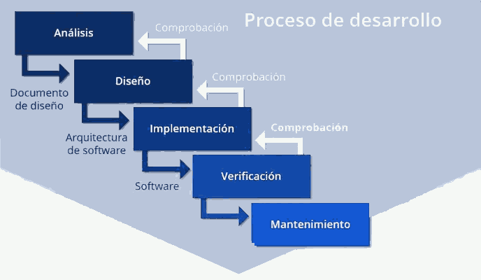
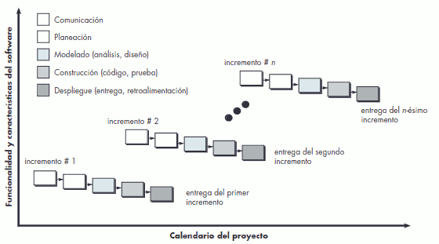
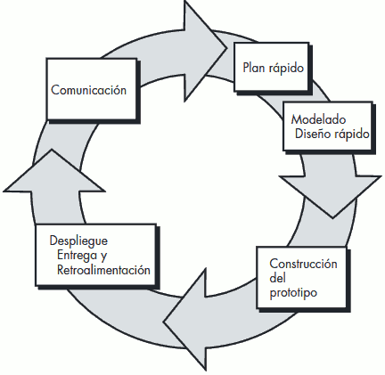
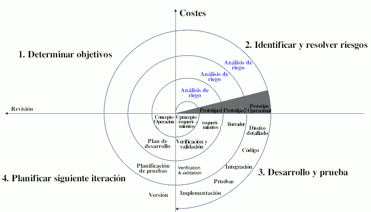
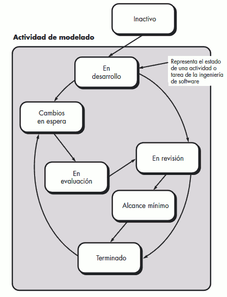

Los modelos de proceso prescriptivo fueron propuestos originalmente para poner orden en el caos del desarrollo de software. La historia indica que estos modelos tradicionales han dado cierta estructura útil al trabajo de ingeniería de software y que constituyen un mapa razonablemente eficaz para los equipos de software. Sin embargo, el trabajo de ingeniería de software y el producto que genera siguen “al borde del caos”.
Modelo en Cascada ( waterfall model )
Es un procedimiento lineal que se caracteriza por dividir los procesos de desarrollo en sucesivas fases de proyecto, donde cada una de estas fases se ejecuta tan solo una vez. Los resultados de cada una de las fases sirven como hipótesis de partida para la siguiente. Este escaso margen de error lo hace prácticamente imposible de utilizar. Sólo es aplicable en pequeños desarrollos.

El modelo de la cascada es el paradigma más antiguo de la ingeniería de software. Entre los problemas que en ocasiones surgen al aplicar el modelo de la cascada se encuentran los siguientes:
- Es raro que los proyectos reales sigan el flujo secuencial propuesto por el modelo. Aunque el modelo lineal acepta repeticiones, lo hace en forma indirecta.
- A menudo, es difícil para el cliente enunciar en forma explícita todos los requerimientos. El modelo de la cascada necesita que se haga y tiene dificultades para aceptar la incertidumbre natural que existe al principio de muchos proyectos.
- El cliente debe tener paciencia. No se dispondrá de una versión funcional del(de los) programa(s) hasta que el proyecto esté muy avanzado. Un error grande sería desastroso si se detectara al revisar el programa en funcionamiento.
En un análisis de proyectos reales se detectó que el modelo en cascada suele llegar a "estados de bloqueo” en los que ciertos miembros del equipo de proyecto deben esperar a otros a fin de terminar tareas interdependientes.
Modelos de proceso incremental
Hay situaciones en las que el esfuerzo de desarrollo imposibilita un proceso lineal. Además, tal vez haya una necesidad imperiosa de dar rápidamente cierta funcionalidad limitada de software a los usuarios y aumentarla en las entregas posteriores de software. En tales casos, se elige un modelo de proceso diseñado para producir el software en incrementos.
El modelo de proceso incremental se centra en que en cada incremento se entrega un producto que ya opera. Los primeros incrementos son versiones desnudas del producto final, pero
proporcionan capacidad que sirve al usuario y también le dan una plataforma de evaluación. Por ejemplo, un software para procesar textos que se elabore con el paradigma incremental quizá entregue en el primer incremento las funciones básicas de administración de archivos, edición y producción del documento; en el segundo dará herramientas más sofisticadas de edición y producción de documentos; en el tercero habrá separación de palabras y revisión de la ortografía; y en el cuarto se proporcionará la capacidad para dar formato avanzado a las páginas.
Cuando se utiliza un modelo incremental, es frecuente que el primer incremento sea el producto fundamental. Es decir, se abordan los requerimientos básicos, pero no se proporcionan muchas características suplementarias (algunas conocidas y otras no). El cliente usa el producto fundamental (o lo somete a una evaluación detallada).

Modelos de proceso evolutivo
El software, como todos los sistemas complejos, evoluciona en el tiempo. Es frecuente que los requerimientos del negocio y del producto cambien conforme avanza el desarrollo, lo que hace que no sea realista trazar una trayectoria rectilínea hacia el producto final; los plazos apretados del mercado hacen que sea imposible la terminación de un software perfecto, pero debe lanzarse una versión limitada a fin de aliviar la presión de la competencia o del negocio; se comprende bien el conjunto de requerimientos o el producto básico, pero los detalles del producto o extensiones del sistema aún están por definirse.
En estas situaciones y otras parecidas se necesita un modelo de proceso diseñado explícitamente para adaptarse a un producto que evoluciona con el tiempo. Los modelos evolutivos son iterativos. Se caracterizan por la manera en la que permiten desarrollar versiones cada vez más completas del software. Dos modelos comunes de proceso evolutivo son:
Modelo prototipos.
Es frecuente que un cliente tenga unas nociones generales pero no identifique los requerimientos detallados. En otros casos, el desarrollador tal vez no esté seguro de la eficiencia de un algoritmo, de la adaptabilidad de un sistema operativo o de la forma que debe adoptar la interacción entre el humano y la máquina. En estas situaciones,el paradigma de hacer prototipos tal vez ofrezca el mejor enfoque.
Este paradigma ayuda a mejorar la comprensión de lo que hay que elaborar cuando los requerimientos no están claros.
Ccomienza con comunicación. Reuniones con otros participantes para definir los objetivos generales del software e identificar requerimientos . Se planea rápidamente una iteración para hacer el prototipo, y se lleva a cabo el modelado (en forma de un “diseño rápido”). Éste se centra en la representación de aquellos aspectos del software que serán visibles para los usuarios finales (por ejemplo, disposición de
la interfaz humana o formatos de la pantalla de salida). El diseño rápido lleva a la construcción
de un prototipo. Éste se entrega y es evaluado por los participantes, que dan retroalimentación para mejorar los requerimientos. La iteración ocurre a medida de que el prototipo es afinado para satisfacer las necesidades de distintos participantes, y al mismo tiempo permita entender mejor lo que se necesita hacer.
La idea es que el prototipo sirva como mecanismo para identificar los requerimientos del software. Para la construcción del primer prototivo pueden utilizarse fragmentos de programas existentes o aplicar herramientas que permitan generar rápidamente programas que funcionen.
Modelo Espiral
Es un modelo evolutivo del proceso del software y se acopla con la naturaleza iterativa de hacer prototipos con los aspectos del modelo de cascada. Tiene el potencial para hacer un desarrollo rápido de versiones cada vez más completas.
El software se desarrolla en una serie de entregas evolutivas. Durante las primeras iteraciones, lo que se entrega puede ser un modelo o prototipo. En las iteraciones posteriores se producen versiones cada vez más completas.
El costo y la programación de actividades se ajustan con base en la retroalimentación obtenida del cliente después de la entrega. A diferencia de otros modelos del proceso que finalizan cuando se entrega el software, el modelo espiral puede adaptarse para aplicarse a lo largo de toda la vida del software. El modelo espiral es un enfoque realista para el desarrollo de sistemas y de software a gran escala. El modelo espiral usa los prototipos como mecanismo de reducción de riesgos, pero, más importante, permite aplicar el enfoque de hacer prototipos en cualquier etapa de la evolución del producto.

Modelos concurrentes
Permite que un equipo de software divida el desarrollo del software en elementos iterativos y concurrentes Por ejemplo, la actividad de modelado definida para el modelo espiral se logra por medio de invocar una o más de las siguientes acciones de software: hacer prototipos, análisis y diseño.
Cada actividad puede encontrarse en uno de los momentos que se muestran en la imagen (en desarrollo, cambios en espera, en evaluación, en revisión o terminada). En forma similar, es posible representar de manera análoga otras actividades, acciones o tareas (por ejemplo, comunicación o construcción). Todas las actividades de ingeniería de software existen de manera concurrente, pero se hallan en diferentes estados.
Por ejemplo, la actividad de comunicación termina su primera iteración al principio de un proyecto y existe en el estado de cambios en espera. La actividad de modelado (que existía en estado inactivo mientras concluía la comunicación inicial), ahora hace una transición al estado en desarrollo. Sin embargo, si el cliente indica que deben hacerse cambios en los requerimientos, la actividad de modelado pasa del estado en desarrollo al de
cambios en espera.
El modelado concurrente define una serie de eventos que desencadenan transiciones de un estado a otro para cada una de las actividades, acciones o tareas de la ingeniería de software. Por ejemplo, durante las primeras etapas del diseño (acción importante de la ingeniería de software que ocurre durante la actividad de modelado), no se detecta una inconsistencia en el modelo de requerimientos. Esto genera el evento corrección del modelo de análisis, que disparará la acción de análisis de requerimientos del estado terminado al de cambios en espera.
Ventajas:
- Excelente para proyectos en los que se conforman grupos de trabajo independientes.
- Proporciona una imagen exacta del estado actual de un proyecto.
Desventajas
- Si no se dan las condiciones señaladas no es aplicable.
- Si no existen grupos de trabajo no se puede trabajar en este método